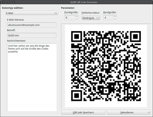
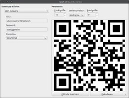
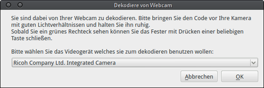
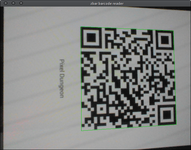
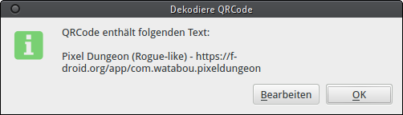

QtQR
Dieser Artikel wurde für die folgenden Ubuntu-Versionen getestet:
Ubuntu 16.04 Xenial Xerus
Ubuntu 14.04 Trusty Tahr
Zum Verständnis dieses Artikels sind folgende Seiten hilfreich:
QtQR  kann URLs, Visitenkarten, Text, E-Mail-Adressen und vieles weitere in einen QR-Code umwandeln kann. Ebenso kann QtQR Daten aus einem QR-Code dekodieren, entweder aus einer Bilddatei oder über eine angeschlossene Webcam. Es arbeitet als Front-End für qrencode.
kann URLs, Visitenkarten, Text, E-Mail-Adressen und vieles weitere in einen QR-Code umwandeln kann. Ebenso kann QtQR Daten aus einem QR-Code dekodieren, entweder aus einer Bilddatei oder über eine angeschlossene Webcam. Es arbeitet als Front-End für qrencode.
Unterstützte Formate:
E-Mail
Lesezeichen (für Web-Adressen)
WLAN-Zugangsdaten
Geo-Koordinaten
SMS
MMS
Telefonnummer
URL
Text
Kontakt (Telefonbucheintrag im vCard-Format)
Installation¶
QtQR kann ab Ubuntu 12.10 direkt aus den offiziellen Paketquellen installiert werden [1]:
qtqr (universe)
 mit apturl
mit apturl
Paketliste zum Kopieren:
sudo apt-get install qtqr
sudo aptitude install qtqr
PPA¶
Falls man QtQR unter Ubuntu 12.04 nutzen möchte, muss man auf ein "Personal Package Archiv" (PPA) [2] ausweichen.
Adresszeile zum Hinzufügen des PPAs:
ppa:qr-tools-developers/daily
Hinweis!
Zusätzliche Fremdquellen können das System gefährden.
Ein PPA unterstützt nicht zwangsläufig alle Ubuntu-Versionen. Weitere Informationen sind der  PPA-Beschreibung des Eigentümers/Teams qr-tools-developers zu entnehmen.
PPA-Beschreibung des Eigentümers/Teams qr-tools-developers zu entnehmen.
Damit Pakete aus dem PPA genutzt werden können, müssen die Paketquellen neu eingelesen werden.
Nach dem Aktualisieren der Paketquellen erfolgt die Installation wie oben angegeben.
Bedienung¶
Das Programm kann dann sofort gestartet werden [3]. Die Bedienung des Programms ist sehr einfach. Zunächst wählt man auf der linken Seite einen Datentyp aus, z.B. E-Mail oder URL. Danach gibt man die Daten in die entsprechenden Textfelder ein und QtQR generiert automatisch bei jeder Änderung den entsprechenden QR-Code.
Auf der rechten Seite im Programm kann man zunächst die Parameter des QR-Codes einstellen (Fehlerkorrektur, Randbreite und Punktgröße). Darunter wird der QR-Code generiert und unter diesem bietet das Programm die Möglichkeit, den QR-Code als Bild zu speichern oder ein Bild aus einer Datei oder mit Hilfe einer Webcam einzulesen.
|  |
| E-Mail-Adresse |
|  |
| WLAN-Einstellungen |
QR-Code einlesen¶
Wenn man einen QR-Code aus einer Bilddatei lesen möchte, dann wählt man die Schaltfläche "Dekodieren" unten rechts und wählt "Dekodieren von einer Datei" oder nutzt die Tastenkombination Strg + O .
Möchte man jedoch einen QR-Code von einem Papier (etwa einem Prospekt) oder einem anderen Gerät (etwa Smartphone) auslesen, dann kann dies über die Option "Dekodieren von Webcam" oder die Tastenkombination Strg + W erfolgen.
Zunächst fragt das Programm nach der zu verwendenden Webcam. Danach wird das Live-Bild der Webcam angezeigt und man kann über das Drücken einer beliebigen Taste das Einlesen bestätigen. Der dekodierte Text wird dann in einem Fenster angezeigt und kann dort kopiert oder weiter bearbeitet werden.
|  |
| Auswahl der Webcam |
|  |
| Live-Bild der Webcam |
|  |
| Dekodierter Text |
Problemlösung¶
Dekodieren funktioniert nicht¶
Wenn das Dekodieren von QR-Codes unter Ubuntu 16.04 nicht funktioniert, hilft folgender Workaround: In der Datei /usr/lib/python2.7/dist-packages/qrtools.py die Zeile 181 von
raw = pil.tostring()
nach
raw = pil.tobytes()
ändern, siehe auch Diskussion bei Launchpad .
 Übersichtsartikel
Übersichtsartikel- Erstellt mit Inyoka
-
 2004 – 2017 ubuntuusers.de • Einige Rechte vorbehalten
2004 – 2017 ubuntuusers.de • Einige Rechte vorbehalten
Lizenz • Kontakt • Datenschutz • Impressum • Serverstatus -
Serverhousing gespendet von